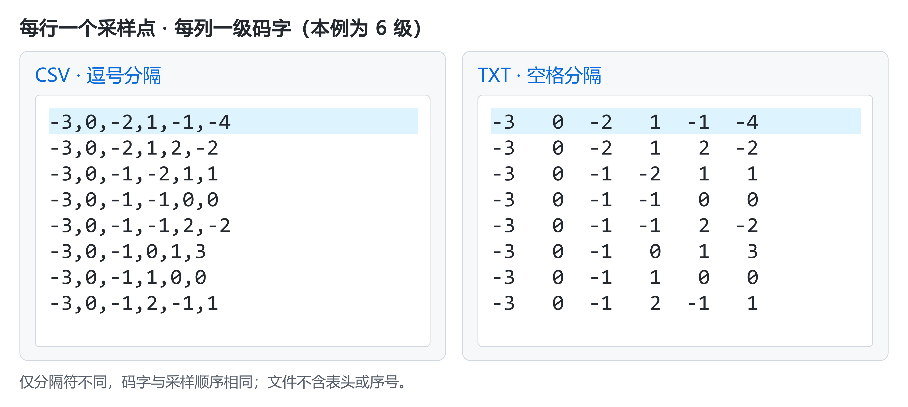

用户手册
本手册介绍使用自有 ADC 数据进行校准、评估与模型优化的方法。首次使用请先完成快速上手，完整参数定义见配置参考。
1. 工作流程与基本概念
创建项目后，依次完成 数据预处理 → 模型训练 → 独立测试。效果达标后，再按部署需求进行模型压缩和硬件验证。
| 阶段 | 操作入口 | 目标 |
|---|---|---|
| 预处理 | 数据 | 检查原始码字，配置 ADC 结构，生成训练数据 |
| 训练 | 配置 → 浮点模型 → 模型训练 | 学习 ADC 的误差补偿关系 |
| 测试 | 测试 | 用独立采集比较校准前后的频谱与指标 |
| 优化与部署 | 模型搜索、剪枝、量化、硬件 | 在满足精度要求的前提下减小实现规模 |
项目保存配置、任务和结果。修改实验条件时新建任务，保留原结果供比较。
校准涉及三类数据：
| 数据 | 用途 |
|---|---|
| 模型输入 | 送入模型的各级码字或最终输出码字 |
| 补偿基准 | 校准前的重建输出，与模型补偿量相加得到校准结果 |
| 目标参考 | 从采集信号拟合得到，用于训练模型 |
训练损失衡量模型对参考的拟合程度，校准效果由独立测试判断。
2. 准备自己的 ADC 数据
数据格式
每份文件保存一组连续采集，每行对应一个采样点。CSV 用逗号分隔，TXT 用空白分隔；文件只保存码字，不添加表头、时间戳或序号列。

| 数据形式 | 如何排列 | 如何配置 |
|---|---|---|
| 各级码字 | 每列对应一级 ADC | 选择“各级码字”，填写级数、位宽、编码和名义级间增益 |
| 最终输出码字 | 每行一个完整输出码字 | 选择“最终输出码字”，填写输出位宽与编码 |
| 多路交织数据 | 按 lane 0 至 lane L−1 循环逐行排列 | 填写通道数，使用合并后的总采样率 |
图中数据来自六级流水线 ADC 仿真，六列依次对应五个 2.5-bit 级和一个 4-bit 后端。二进制及其他输入格式见数据格式参考。
准备数据时同时记录 ADC 规格、采样率、输入频率与幅度、满量程及采集条件。幅度注明峰值、峰峰值或 RMS；交织采样率按总输出填写，如两路各 700 MS/s 对应 1.4 GHz。
导入与检查
- 在 数据 页选择原始目录，设置数据来源、编码、通道数和 ADC 结构。
- 点击 检查数据，核对文件数、列数、有效行数及码字范围。
- 确认识别结果符合采集规格，且数据无空值、非法码字或明显饱和，再进入预处理。

3. 预处理与数据划分
划分数据
按完整采集文件划分数据，避免同一连续记录的相邻窗口进入不同集合。
| 集合 | 用途 |
|---|---|
| 训练集 | 估计粗校准参数、训练模型 |
| 验证集 | 选择网络结构、训练轮数和优化参数 |
| 最终测试集 | 方案确定后评估性能，不参与训练或调参 |
软件按 测试集比例划分训练与留出数据。需要反复调参时，先单独保留最终测试目录，再把其余数据划分为训练集和验证集；此时 raw_test 用于验证。
配置 ADC 与补偿基准
在 数据 页按 ADC 规格设置以下参数：
| 参数 | 配置依据 |
|---|---|
| 级数、各级位宽 | 与数据列及实际级结构对应 |
| 名义级间增益 | 填写设计值，用于计算初始码字合成权重 |
| IGE、DAC | 分别估计级间增益误差与 DAC 电平误差 |
| 初始参数合成 | 以名义重建输出为基准，评估整体校准改善 |
| 粗校准后合成 | 以粗校准输出为基准，由网络补偿剩余误差 |
IGE、DAC 与补偿基准分别设置。预处理完成后检查粗校准验收结果。
执行预处理
- 核对测试集比例、抽样比例、校准质量与补偿基准。
- 执行 检查数据 → 开始预处理；自定义权重时先执行 扫描初始权重。
- 完成后确认任务成功、分组数量正确，再打开输出目录。
训练时选择完整的 train_N 目录；测试时选择对应的 raw_test。保留整个预处理目录及配方，供后续训练和测试使用。

4. 配置和运行训练
选择输入与网络
进入 配置 → 浮点模型 → 模型训练，在 数据读取 中选择训练目录，核对输入模式、采样率、信号类型和每组读取行数。读取行数填 0 表示全部。
从单隐藏层、少量节点、短窗口和粗网格开始，以验证效果决定是否增加容量。
| 参数 | 作用与选择方法 |
|---|---|
| 窗口数量 | 控制每次预测使用的相邻采样点数；静态误差可从 1 开始，有记忆效应时比较 3 等短窗口 |
| 隐藏层 | 控制节点数；优先单隐藏层，验证仍有系统性残差时再逐步增加 |
| 网格数 grid | 控制样条分段细度；网格越细，容量与计算量越大 |
| 样条阶数 k | 控制样条阶数；从低阶开始比较 |

设置训练参数
| 参数 | 配置建议 |
|---|---|
| 学习率 | 损失振荡或发散时先降低，并检查输入与目标尺度 |
| 训练轮数 | 根据验证结果选择，避免只追求训练损失下降 |
| 批大小 | 根据显存设置，显存不足时逐步减半 |
| 目标标准化 | 统一补偿目标的数值尺度；对照实验保持设置一致 |
| 调度器、权重衰减、早停 | 调整学习率与训练过程；早停依据训练损失，仍需独立验证 |
| 运行设备 | 有兼容 NVIDIA GPU 时选择 CUDA，启动后确认实际设备 |

运行与保存
- 进入 训练 → 开始新训练，核对数据目录、模型结构和设备。
- 观察损失、学习率与训练进度；用验证集判断效果是否改善。
- 中止任务使用 安全停止。恢复中断任务使用 继续剩余训练；追加轮数使用 继续训练… 并加载原任务的
last.pt。
训练结束后，best.pt 保存训练损失最佳的模型，last.pt 用于续训。保留完整任务目录。
训练后评估当前数据使用已载入数据；独立测试需进入 测试 页执行。
5. 独立测试与结果解读
运行测试
- 在 测试模型 中选择
best.pt或待比较模型，核对结构与输入模式。 - 在 原始采集数据目录 中选择
raw_test或预留的独立采集目录。测试沿用模型关联的预处理参数。 - 核对采样率、单音／双音模式、每组读取行数和保存位置，点击 开始测试。
- 结束后确认预期采集均已完成，通过 打开目录 保存指标报告与频谱。

比较不同模型时，固定采集文件、采样率、读取范围、FFT 点数、窗函数、分析带宽及幅度标尺。
判断校准效果
在 单组 FFT 中比较频谱，在 全部数据组指标 中检查各频率与幅度的表现，同时关注平均值、最差组和退化组。
| 指标 | 含义 | 重点检查 |
|---|---|---|
| SNDR | 信号相对噪声与失真的比值 | 整体性能是否提高，各组是否稳定 |
| SFDR | 信号相对最大杂散的比值 | 最大杂散及谐波是否降低 |
| ENOB | 按信噪失真性能换算的有效位数 | 按报告规定的输入幅度与信号条件解读 |

该图采用 32768 点周期 Hann 窗、1 GHz 采样率和 0～500 MHz 分析带宽。查看频谱原图。
校准主要抑制可重复失真，输入热噪声不会因此自动降低。若频谱噪底明显下降，先核对幅度标尺、FFT 设置和读取范围。
理论参照须与软件结果统一幅度基准，计算条件见样例频谱说明。更换频率、幅度或器件后，应重新验证校准效果。
6. 改善校准效果
先检查数据与参考，再调整训练和模型容量。
| 顺序 | 检查内容 | 处理方式 |
|---|---|---|
| 1. 数据与结构 | 编码、列序、位宽、增益、饱和及采样率 | 修正输入，重新预处理 |
| 2. 基准与参考 | 信号类型、补偿基准、拟合与粗校准结果 | 确认参考适用、基准正确 |
| 3. 训练过程 | 有效样本、损失、学习率和运行设备 | 排除数据读取及训练异常 |
| 4. 模型容量 | 窗口、节点数、grid 和 k | 固定验证集，逐项比较 |
| 5. 泛化表现 | 未参与调参的频率、幅度与采集 | 检查最差组及性能退化 |
训练损失下降、验证指标停滞或下降时，优先减小模型、减少轮数或调整正则化；训练与验证均不佳时，先排除数据和参考问题，再考虑增加容量。
对照实验固定数据划分、预处理、评估条件、随机种子和训练预算，每次只改变一个因素。记录参数量、训练时长及逐组指标，选择满足目标的较小方案。最终测试数据不用于调参。
7. 模型优化与硬件流程
浮点模型通过验证后，按部署需求选择以下流程。模型优化使用验证集，最终方案另做独立测试。
模型搜索
在 配置 → 浮点模型 → 模型搜索 中设置训练数据、验证目录、SNDR/SFDR 下限与时间预算，运行后比较通过验收的候选模型。关注各工况性能时，选择 每组都达标，并检查最差组。
模型剪枝
在 测试 → 模型剪枝 中选择模型与验证数据，设置增益保留目标，运行后检查连接数与逐组性能。需要恢复精度时，执行剪枝训练并复测。
增益保留率按校准带来的指标改善计算：指标由 60 提升至 80 dB 时，保留 90% 增益要求至少达到 78 dB。
量化
QAT 支持单隐藏层共享网络。先通过 位宽扫描 选择候选方案，再进行量化感知训练和验收；比较量化结果与浮点模型的性能差，保留模型、浮点参照及预处理配方。
硬件验证
在 硬件 → 仿真与综合 中选择模型和输出接口。补偿值接口输出校正量，校准值接口输出完整校准结果。
| 阶段 | 目标与检查项 |
|---|---|
| RTL 导出 | 生成源码、参数与接口说明 |
| 仿真对拍 | 检查数字输出与模型结果是否一致 |
| 综合 | 检查资源或面积、时序及目标时钟是否达标 |
| ASIC 实现 | 检查逻辑综合、布局布线及所选功耗评估结果 |
ASIC 流程先在 管理 ASIC 扩展 中配置环境并完成自检。工具要求见硬件参考。比较方案时保持工艺、时钟和测试条件一致，各阶段以实际报告为准。
8. 保存、复现与迁移
实验完成后保存三类材料：
- 原始数据：采集文件、采集条件及训练／验证／测试划分。
- 完整项目：任务配置、预处理结果、模型、报告与日志。
- 运行环境：软件、GPU／驱动及硬件流程所用工具。
迁移时复制项目和原始数据，在目标电脑打开项目，修复外部数据路径。使用原模型、原划分和相同评估条件复测，确认结果一致后再清理旧目录。
raw_test 可能引用外部原始文件，备份时一并保留原始目录。
9. 常见问题与求助
| 现象 | 优先处理 |
|---|---|
| 数据检查失败 | 核对分隔符、表头、列数、码字范围与编码 |
| CUDA 不可用 | 检查设备设置、GPU 识别及驱动，见 GPU 排错 |
| 显存不足 | 逐步减小批大小，再检查窗口与模型规模 |
| 训练不收敛 | 检查输入、参考和学习率，按第 6 章排查 |
| 损失下降但测试变差 | 检查数据隔离与评估条件，再比较容量和轮数 |
| 模型或配方不匹配 | 从原训练任务恢复完整模型及关联文件 |
| 续训失败 | 使用原任务的 last.pt，确认结构与配置匹配 |
| 迁移后数据缺失 | 检查原始目录与外部文件引用 |
通过任务的 打开目录 获取配置、日志及报告。反馈请提供运行环境、复现步骤、错误信息和相关任务文件。更多处理方法见排错文档，问题提交方式见 CONTRIBUTING。